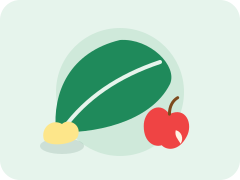
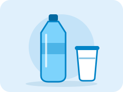
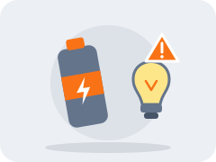

What if waste could be worth more?

Pemantauan Data
Pantau jumlah sampah berdasarkan kategori.
Pemilahan Otomatis
Mendukung proses pemilahan sampah.
Ringkasan Data
Data tersaji dalam bentuk grafik dan tabel.
Ramah Lingkungan
Mendorong kebiasaan memilah sampah.
Tiga kategori yang dikenali Trash-Sure
Setiap sampah diarahkan ke wadah yang sesuai dengan jenisnya.

Organik
Sisa makanan, kulit buah, dan daun.

Plastik
Botol minuman, gelas plastik, dan kemasan.

B3
Baterai, lampu, dan elektronik kecil.
Mengenal Trash-Sure
Teknologi untuk membantu pengelolaan sampah yang lebih terarah.
Dashboard Sampah
Pantau data sampah yang tercatat oleh Trash-Sure.
Jumlah per Kategori
Tren
Keterisian Wadah
Data Terbaru
| Tanggal | Jam | Kategori | Berat |
|---|---|---|---|
| 01 Nov 2026 | 14.20 | B3 | 1,8 kg |
| 01 Nov 2026 | 12.45 | Plastik | 2,4 kg |
| 01 Nov 2026 | 10.10 | Organik | 3,2 kg |
| 31 Okt 2026 | 15.30 | Plastik | 1,0 kg |
| 31 Okt 2026 | 09.05 | Organik | 1,2 kg |
Catatan: angka di atas merupakan data ilustrasi untuk contoh tampilan. Data aktual akan muncul setelah perangkat terhubung.
How Does It Work?
Tidak perlu proses yang rumit. Trash-Sure dirancang agar pengguna dapat memilah sampah dengan lebih praktis.
-
1
Insert Your Waste
Masukkan sampah ke bagian input yang telah disediakan.
-
2
Waste Detection
Sensor mulai membaca karakteristik sampah untuk membantu menentukan kategorinya.
-
3
Data Processing
Hasil pembacaan sensor diproses oleh ESP32 sebagai dasar pengendalian mekanisme pemilahan.
-
4
Automatic Sorting
Sampah diarahkan menuju wadah penampungan kategori yang teridentifikasi.
-
5
Monitor the Results
Hasil deteksi ditampilkan pada dashboard agar proses pemilahan dapat dipantau.
Pertanyaan yang sering muncul
Jenis sampah apa saja yang dikenali?
Trash-Sure mengelompokkan sampah ke dalam tiga kategori: organik, plastik, dan B3.
Bagaimana kategori sampah ditentukan?
Sensor membaca karakteristik sampah, lalu hasil pembacaannya diproses oleh ESP32 untuk mengendalikan mekanisme pemilahan.
Di mana hasil pemilahan bisa dilihat?
Di halaman Dashboard. Di sana tersedia jumlah sampah per kategori, grafik tren, dan catatan terbaru.
Apakah data di Dashboard sudah data asli?
Belum. Saat ini Dashboard menampilkan data contoh. Data asli akan muncul setelah perangkat terhubung.
Sudah paham alurnya?
Lihat bagaimana hasil pemilahan ditampilkan di Dashboard.
Visi
Menjadi solusi pemilahan sampah yang praktis dan mudah diterapkan di berbagai institusi untuk membangun kebiasaan memilah sampah sejak dari sumbernya serta mendukung pengelolaan sampah yang lebih terarah. Berkontribusi dalam mewujudkan budaya pemilahan sampah yang konsisten dan bertanggung jawab demi lingkungan yang lebih berkelanjutan.
Misi
- Menghadirkan solusi pemilahan sampah yang praktis dan mudah digunakan.
- Membangun kebiasaan memilah sampah sejak dari sumbernya.
- Mendukung pengelolaan sampah berbasis data melalui pencatatan dan pemantauan sampah berdasarkan kategori.
- Memperluas penerapan solusi pemilahan sampah secara bertahap dan berkelanjutan melalui kerja sama dengan berbagai institusi dan pihak terkait.
Tim Bin-Go
Para pengembang Trash-Sure.
- Rizqika Nur Rahma
- Bintang Pasa Janeetra Wahyudi
- Andika Agung Nugraha Putra
- Jihan Pinkan Eghnilia Wariki
- Aditya Agung Nurcahya Putra